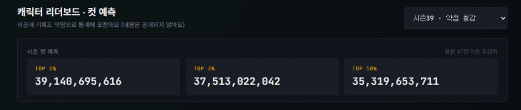
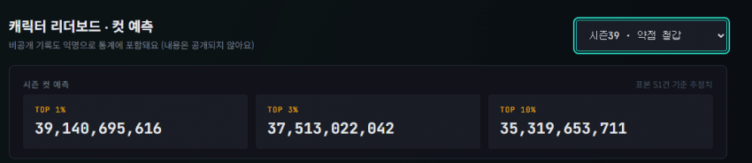
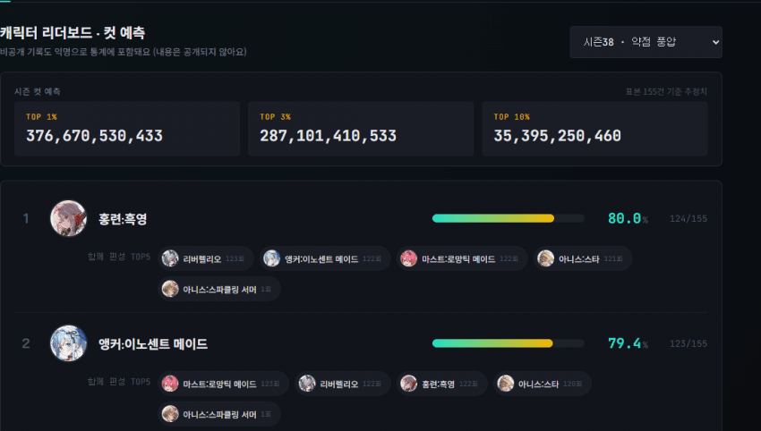
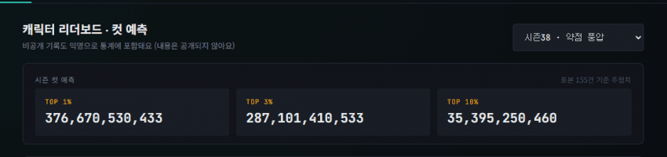
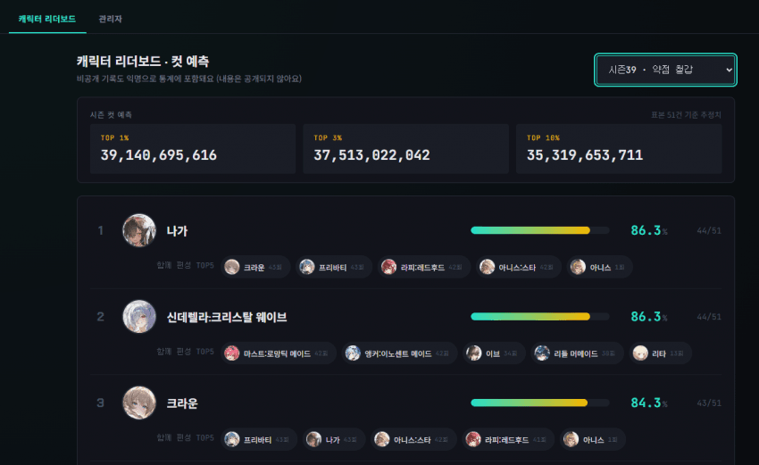
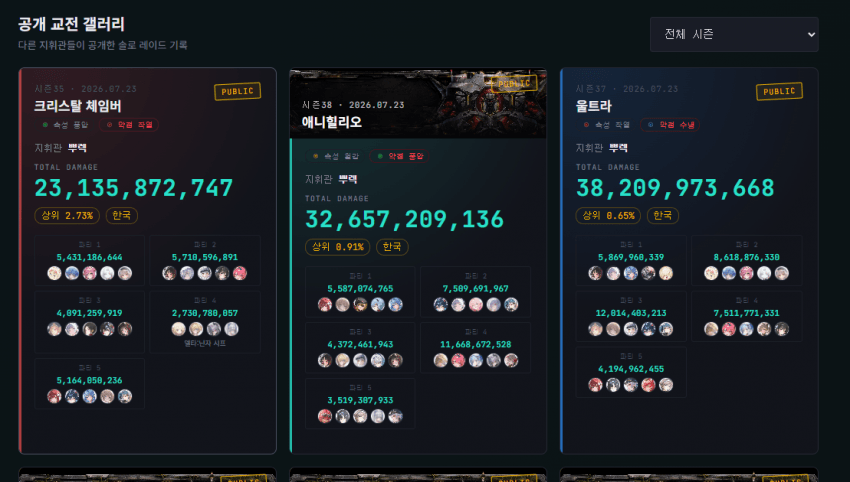

솔레 끝날 때마다 스샷으로 저장하다가, 나중에 찾아보려니 갤러리 뒤지기도 귀찮고 폰 용량도 아까워서 그냥 아카이브 사이트 하나 만들었음
https://soloraidhistory.vercel.app/
- 닉네임 + 코드만 정하면 바로 시작, 회원가입 없음
- 시즌마다 총딜량 · 순위 · 스쿼드 구성 · 파티별 딜량 · 메모 기록
- 순위는 등수(1등)로 적어도 되고 퍼센트(8.4%)로 적어도 됨
- 캐릭터는 검색해서 선택, 별명 검색도 됨 (흑련 치면 홍련:흑영 나옴)
- 파티 딜량은 스샷에서 자동 인식도 가능 (드래그로 영역만 잡으면 됨, 5파티 한 번에 처리)
- 내 기록은 시즌별 그래프로 추이 확인 가능
- 원하는 기록만 골라서 공개 갤러리에 공유 가능 (비공개도 당연히 가능)
- 시즌별 컷 예측(1%/3%/10%)이랑 캐릭터 픽률 통계도 있음. 표본 쌓일수록 정확해지는 구조라 사람 많이 올수록 좋음
## 주의사항 ##
- 클로즈 베타라 기능/디자인 계속 바뀔 수 있음
- 버그 있으면 바로 말해주면 고치도록 노력하겠음. 지금까지도 피드백 받아서 계속 고쳐온 거임
- 예전 시즌 기록은 없음. 옛날 스샷 남아있으면 직접 입력해서 쌓으면 됨






계속 쓰다가 불편한 거 있으면 댓글로 던져주셈